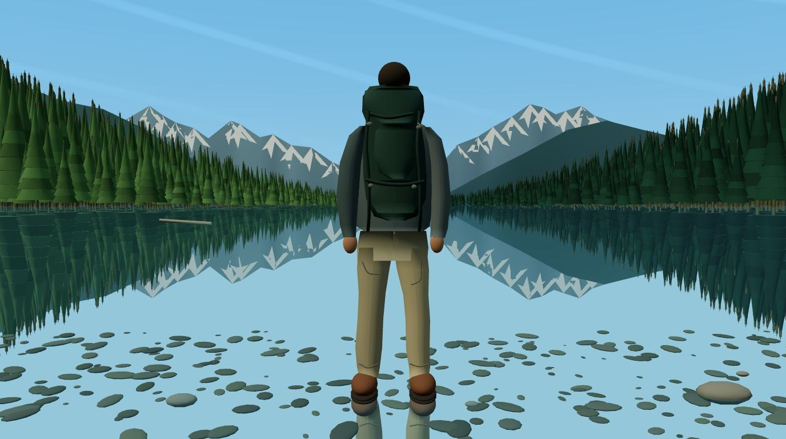
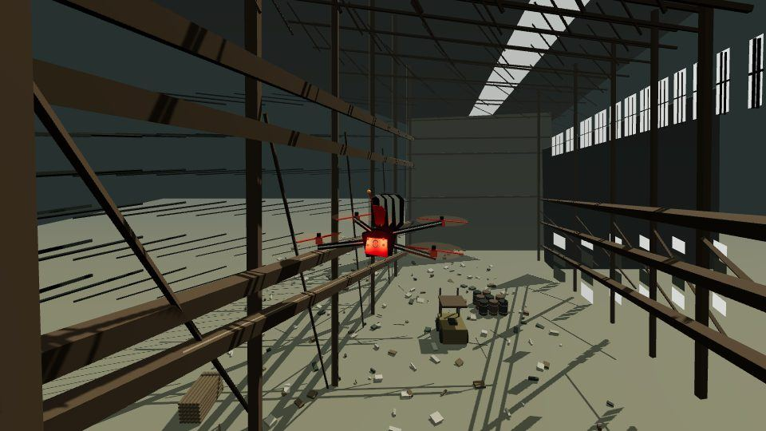
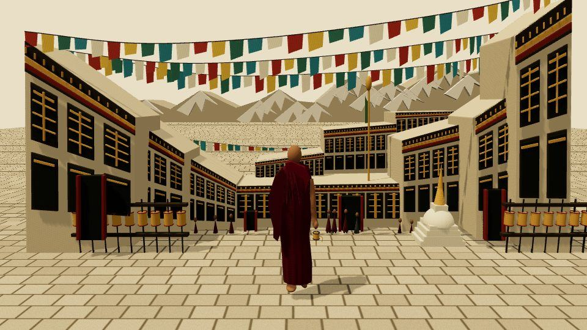
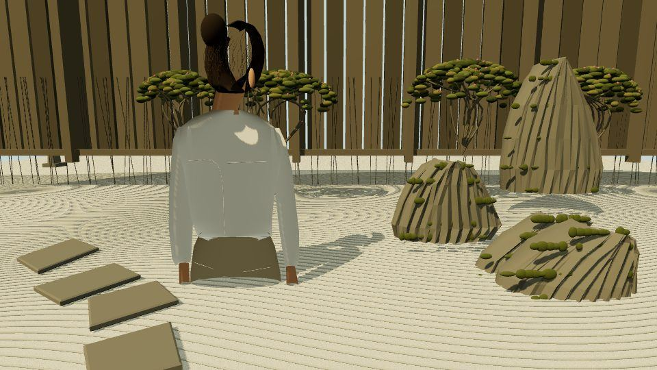
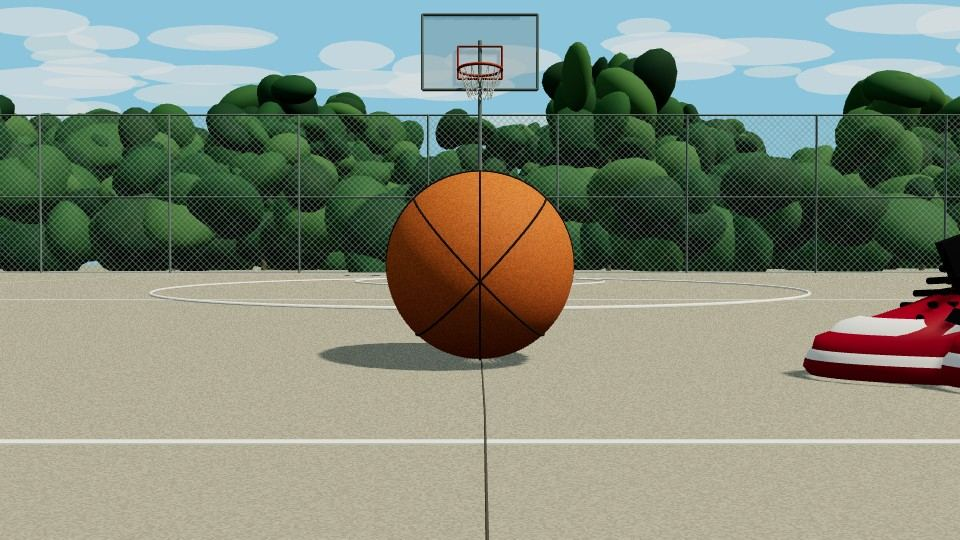
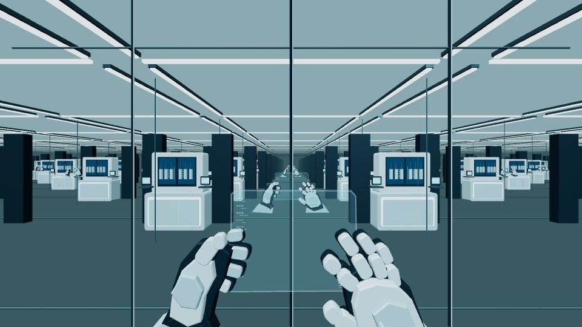
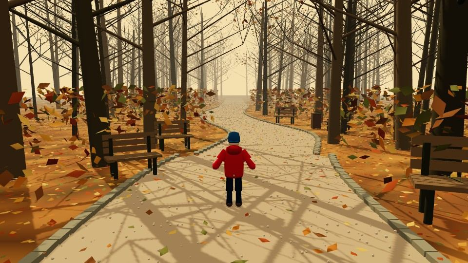
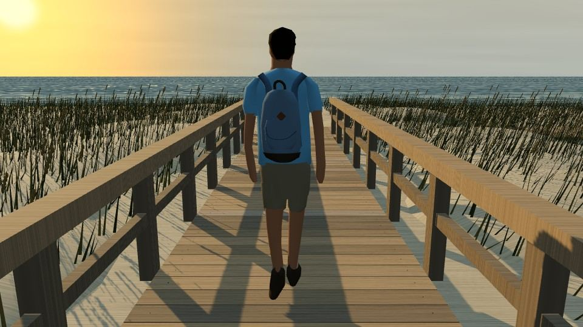
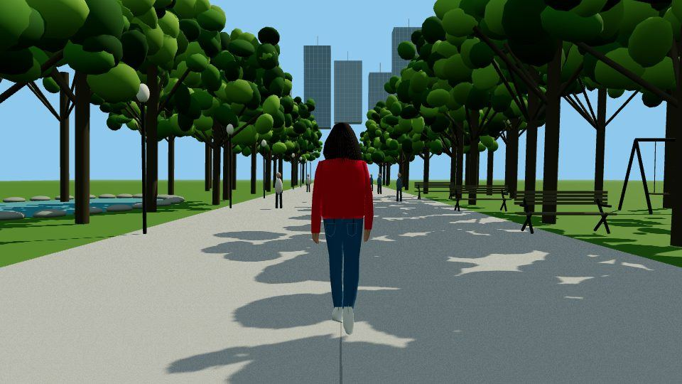

#136
FAIL · 构图 LANE1为什么 FAIL：主体外轮廓接近（IoU≈0.96），但开场完整构图与内部形状未达精确匹配——显示器角、键盘透视、鼠标轮廓、瓶盖与窗帘范围仍明显不同。


结论先行。FAIL 四题要过目；PASS 十五题 + #4 金样也都可直接看、页内播，不用下载。
材料 / norectex / WASD 过了；卡在官方首帧构图锁。
为什么 FAIL：主体外轮廓接近（IoU≈0.96），但开场完整构图与内部形状未达精确匹配——显示器角、键盘透视、鼠标轮廓、瓶盖与窗帘范围仍明显不同。
为什么 FAIL：中殿、走道、成对长椅、高窗与祭坛都有，但建筑雕刻、会众、窗格划分、前景轮廓与拱顶比例仍简化，未锁死官方首帧。


为什么 FAIL：运动员落点、记分牌、看台层与栏架大致按像素坐标放了，但屋顶构造、座位透视、解剖细节与部分道具轮廓仍明显近似。


为什么 FAIL：主体大致位置、山峰与湖面地平线有量测，但身体轮廓、雪斑、林缘、岸线与岩石分布仍可见偏差。



本轮未重做，沿用既有金样运动片。
说明：用既有金样交付；本轮 Lane1 跳过重做。下方为金样 opening 参考与运动片。


norectex；构图锁官方首帧（开场图取自录制首帧 / 中段帧作 side）。
结论：倒 U 形长猫毛绒 + 右侧紫色湿巾包；构图对齐官方，颜色风格化。


结论：直立合拢雨伞居中湿街；路缘与楼宇峡谷；固体几何、无贴图拉伸。


结论：仓库内竞速四轴；剪影量测对齐官方；固体残骸/货架/窗。



结论：寺院庭院中行走僧人；经幡与立面量测对齐。



结论：左侧前景人物 + 木篱 + 右侧石组；砾石庭院构图对齐。



构图/形状锁 + norectex + 30fps motion。
结论：构图与形状锁通过；无投影贴图；运动片齐全。



结论：构图与形状锁通过；无投影贴图；运动片齐全。


结论：构图与形状锁通过；无投影贴图；运动片齐全。



结论：构图与形状锁通过；无投影贴图；运动片齐全。



结论：构图与形状锁通过；无投影贴图；运动片齐全。



构图/形状锁 + norectex + 30fps motion。
结论：开场构图对齐官方主体/环境；norectex；side 健康。


结论：一点透视人行道、雨云居中、行人与店面；norectex；side 固体街景。


结论：开场构图对齐官方主体/环境；norectex；side 健康。


结论：开场构图对齐官方主体/环境；norectex；side 健康。


结论：主体后中、小径、树与天际线对齐；norectex；运动片为 light 版（约 12.6s）。

